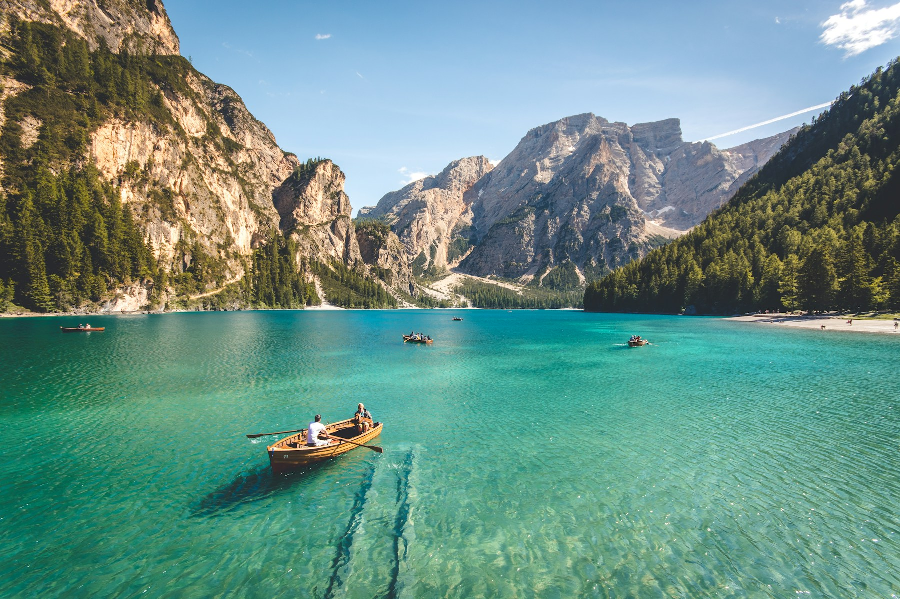

Licenciamento Ambiental
Orientação e acompanhamento de processos junto aos órgãos ambientais competentes.
↗ENGENHARIA • MEIO AMBIENTE • RESPONSABILIDADE
Consultoria técnica para empresas, propriedades e projetos que precisam avançar com segurança, regularidade e responsabilidade ambiental.
01 — SOBRE
Ambiental EngenhariaDa análise inicial ao acompanhamento dos processos, a proposta é tornar cada etapa mais clara e organizada para o cliente.
Atuação voltada à regularização, estudos e projetos ambientais, com orientação técnica conforme a necessidade de cada caso.
02 — GALERIA
Uma apresentação visual dá espaço para mostrar projetos, áreas atendidas, visitas técnicas e resultados reais da empresa.
“Cada projeto pede uma leitura técnica do lugar, da atividade e das exigências aplicáveis.”

03 — SERVIÇOS
Informações objetivas para o cliente identificar rapidamente qual solução precisa.
Orientação e acompanhamento de processos junto aos órgãos ambientais competentes.
↗Apoio técnico para regularização do uso de recursos hídricos e documentação necessária.
↗Avaliação técnica e documentação para atendimento a exigências e processos específicos.
↗Suporte para cadastros e regularizações ambientais de propriedades e atividades.
↗Planejamento e desenvolvimento de soluções adaptadas às demandas de cada empreendimento.
↗04 — PROCESSO
Um fluxo simples para reduzir dúvidas e organizar o andamento do projeto.
Levantamento da necessidade, local e documentação disponível.
Avaliação técnica e definição do caminho mais adequado.
Elaboração, protocolo ou acompanhamento do serviço.
Orientação ao cliente durante as etapas do processo.
05 — CONTATO
Na versão final, esta área pode direcionar o visitante para orçamento, formulário ou WhatsApp.
Solicitar atendimento ↗ Esta apresentação é apenas uma demonstração visual.